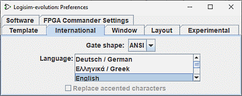
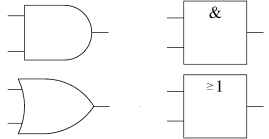

国际化选项卡

此选项卡用于按照本地化偏好配置 Logisim。
-
门形状： Logisim 支持两种绘制门的标准：IEC 门和 ANSI。下表说明了区别。
ANSI IEC 与门 
或门 由于 ANSI 风格在美国更流行，而 IEC 风格在欧洲更流行，因此有些人根据这些地区来称呼这些风格。
Logisim 并未完全遵循任何一种标准；它采用折衷方案，以便在两种外观之间切换。特别是，成形门比相关 IEEE 标准定义的尺寸更方。此外，在 ANSI 风格中，XOR 和 XNOR 门本应与 OR 和 NOR 门具有相同宽度，但由于 IEC XOR 门难以压缩，Logisim 中并未这样处理。
-
语言： 在不同界面语言之间切换。下面列出已有翻译及贡献者信息。
- 法语 翻译部分随 Logisim 2.13.22 引入。由 Roberto Rigamonti 制作，并由洛桑大学的 Marc-André Baillifard 在 Logisim 2.14.2 中完成。
- 德语 翻译随 Logisim 2.6.1 引入。由瑞典乌普萨拉大学的教员 Uwe Zimmermann 完成。
- 希腊语 翻译随 Logisim 2.7.0 引入。由希腊爱奥尼亚群岛技术教育学院的教员 Thanos Kakarountas 完成。
- 意大利语 翻译随 Logisim 2.14.7 引入。
- 荷兰语 翻译随 Logisim 3.2.0 引入。
- 葡萄牙语 翻译随 Logisim 2.6.2 引入。由巴西米纳斯吉拉斯天主教大学的教员 Theldo Cruz Franqueira 完成。
- 俄语 翻译随 Logisim 2.4.0 引入。由来自俄罗斯的 Ilia Lilov 完成。
- 西班牙语 翻译在 Logisim 2.1.0 时已完成，但后续 Logisim 版本添加的新选项仍未翻译。由来自西班牙的 Pablo Leal Ramos 贡献。
- 波兰语 翻译随 Logisim 3.4.0 引入。
- 日语 翻译随 Logisim 3.4.2 引入。由 Narita 完成。
由于这些变化，各语言翻译质量并不完全一致，仍有许多内容需要翻译和修正。欢迎参与 Logisim 的翻译和文档工作。如果您有兴趣，请通过 github.com/logisim-evolution/logisim-evolution 联系项目。表达兴趣并不意味着必须承诺参与；维护者会告知是否已有相关工作，并提供工作版本和说明。翻译过程不需要了解 Java。
-
替换重音字符： 某些平台对不在 7 位 ASCII 字符集中的字符（如 ñ 或 ö）支持不佳。选中此项后，Logisim 会将所有此类字符替换为适当的等效 7 位 ASCII 字符。当当前语言没有可用的等效字符时（如英语），该复选框将被禁用。
下一节： 窗口选项卡。